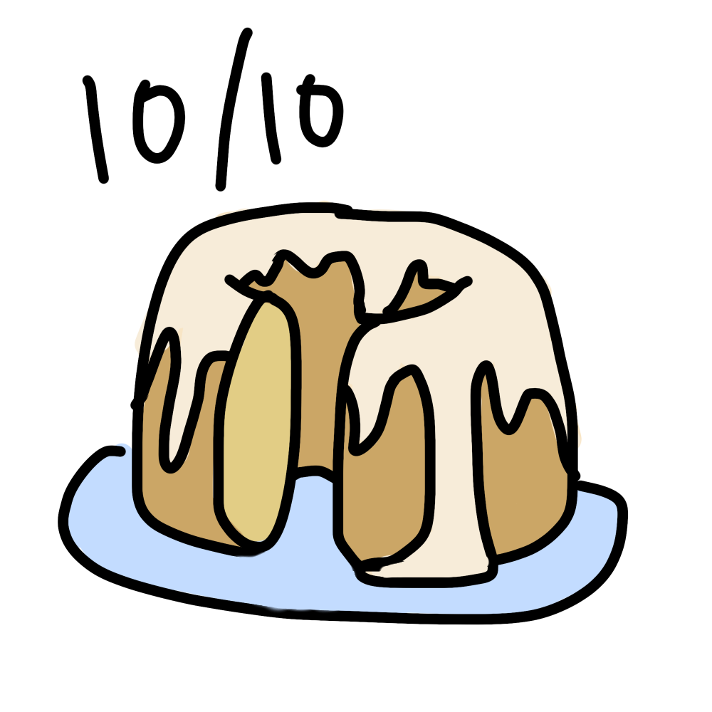

Home
Vanilla Bundt Cake

Description
Made with Vy in preparation for Christmas.
Ingredients
Cake
- 3 cups all-purpose flour
- 1 teaspoon basking powder
- 1/2 teaspoon baking soda
- 3/2 teaspoon salt
- 1 cup unsalted butter
- 8 ounces cream cheese, room temp
- 2 cups granulated sugar
- 6 large eggs, room temp
- 1 tablespoon vanilla extract
- 1 cup whole milk
Glaze
- 2 cups powdered sugar
- 3 tablespoons milk
- 1/2 teaspoon vanilla extract
Directions
Cake
- Preheat oven to 350 deg F.
- Whisk flour, baking powder, baking soda, and salt.
- In another bowl, beat butter and cream cheese until smooth. Add sugar and beat until light and fluffy
- Incorporate 3 eggs one at a time. Add 3 tablespoons of the drys. Incorporate other 3 eggs. Beat in vanilla.
- Add 1/3 drys, mix until combined. Add half of the milk, mix until combined. Repeat, alternating drys and milk.
- Butter and flour bundt pan.
- Pour in cake batter and gently tap on counter to settle.
- Bake for 45 minutes until toothpick comes out clean.
- Cool for 20 minutes on cooling rack.
Glaze
- Whisk powdered sugar, milk, and vanilla until smooth.
- Pour over cooled cake.